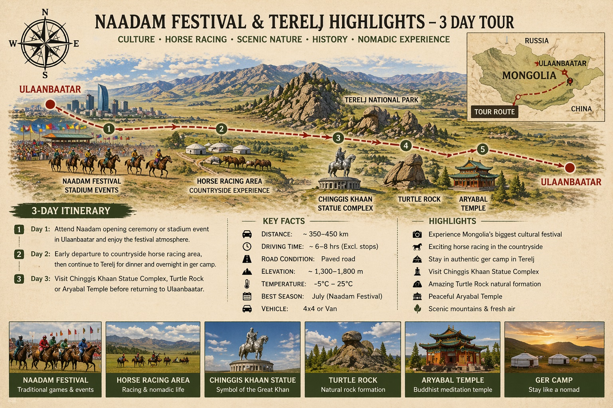

那达慕 + 特勒尔吉 3 日
路线：乌兰巴托那达慕体育场 → 赛马区 → 特勒尔吉国家公园 → 乌兰巴托
从乌兰巴托：城市 + 近郊。建议节奏：2–6 人。
1 人$520
2 人$390
3 人$360
4 人$330
以上为每人参考价（美元），不含国际机票。旺季营地与车辆可能调整。
亮点
- 开幕式
- 赛马
- 特勒尔吉
- 雕像园区

参考行程
第 1 天
参加乌兰巴托那达慕开幕或场馆赛事，感受节日气氛。
第 2 天
清晨前往乡下赛马区，再去特勒尔吉晚餐，蒙古包过夜。
第 3 天
成吉思汗雕像、龟石或阿雅巴尔寺，返回乌兰巴托。
住宿等级
适合既要那达慕、又想短暂出城的旅客。
微信咨询此线路